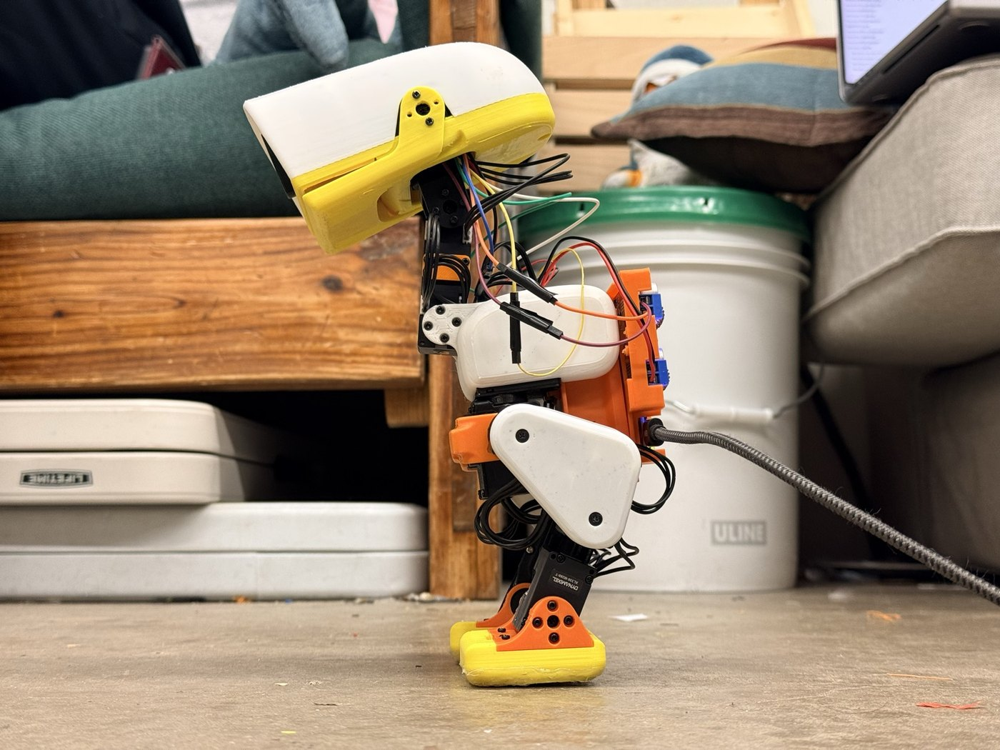

CMU MicroDuck: build and bring-up pages
The pages of the cmu-microduck repository, which describes the first hand-built MicroDuck at Carnegie Mellon as it stood on 2026-10-23. Each page is self-contained: open it here or from a local copy of the repository.

Assembly
Build guide
11 chapters, 82 steps, 176 parts: a 3D view per step, the screw for every hole, the cable routes. The subtitle's voltages are from an earlier power version; the repository's 4-power page has the current ones.
Head computer and senses (Radxa Cubie A7Z)
Header wiring
All seventeen Dupont wires on the A7Z 40-pin header, on photos. In Chinese; the pin numbers and colours are the content.
One-picture wire summary
Click a pin or a wire to isolate it.
Wi-Fi antenna
Sticking the AC019 antenna into the head cap and routing the pigtail.
Touch pads
Five copper pads in the cap, the XIAO ESP32-S3 board, the I2C link and the bench test.
Power
Battery backpack wiring
Power route B: 2S LiPo, switch, DFR1202 and the XT30/MR30 joints. Designed and bought; not yet run on the robot.
Bring-up
Step-by-step bring-up (Raspberry Pi era)
Written in Chinese for the Pi Zero W head the robot had until 2026-10-17. The OpenRB, servo chain, amplifier and head-fit steps still apply; the OS and camera steps are history.
Parts sheets
One page per print release with a picture and the size of every part. V1.8 and V1.28 have no sheet.